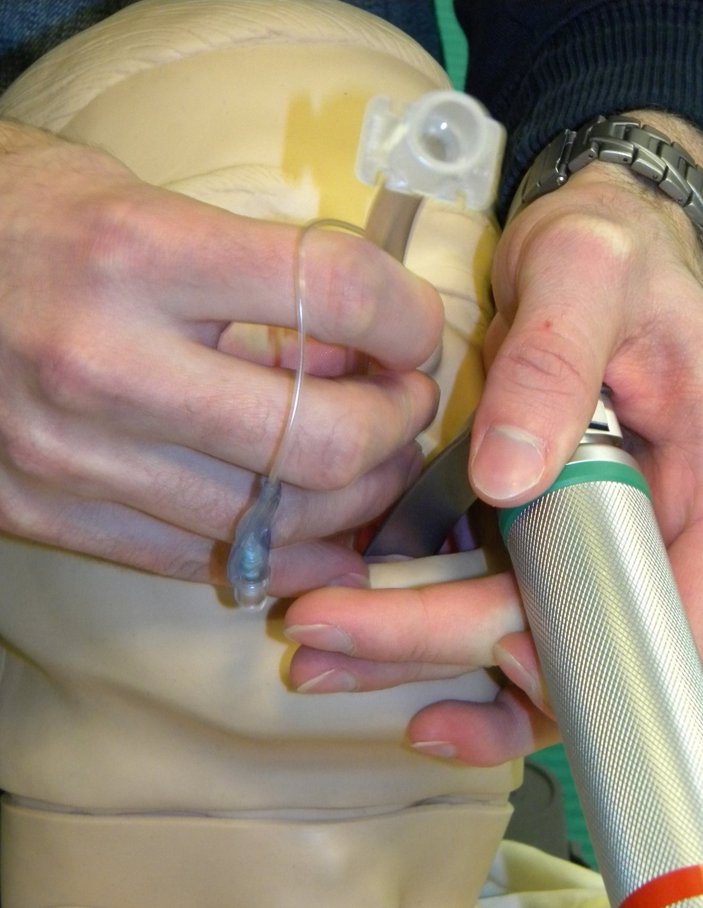

Antes de VCV, PCV ou PSV vem a pergunta que decide tudo: qual falha levou ao tubo? "Intubado" não é diagnóstico — o plano ventilatório nasce da causa. Para a Dani.

"Este é o paciente." Leia, decida — e só então revele o desfecho.
Homem, 42 anos. Encontrado torporoso após ingestão de benzodiazepínico + opioide. Glasgow 6, sem proteção de via aérea. Intubado na emergência por rebaixamento e proteção — não por dificuldade respiratória.
Troca gasosa preservada; a alteração é hipoventilação (acidose respiratória leve), coerente com depressão do drive — não com lesão pulmonar. ↗ ver esta gasometria Respira · gaso
Pense antes de revelar: que estratégia ventilatória você instituiria neste paciente — e por quê? Quando tiver sua resposta, abra o Laboratório e selecione o fenótipo dele; depois volte para o desfecho.
Vendo "paciente intubado + gasometria alterada", a equipe instituiu PEEP 12 e VC baixo "protetor de SDRA". Resultado: hipotensão — num pulmão normal e complacente, PEEP alto só reduziu o retorno venoso, sem nenhum ganho de troca. Tratou-se uma SDRA que não existia.
Revertido para ventilação fisiológica (VC ~7 mL/kg do peso predito, PEEP 5, normocapnia visando PaCO₂ ~40), proteção de aspiração e sem hiperóxia. À medida que os fármacos foram metabolizados (± antagonista), o Glasgow subiu e o paciente foi extubado. O tubo era pelo cérebro, não pelo pulmão.
Do senso comum ao mecanismo: seis perguntas para desmontar a ideia de que "intubado" diz algo sobre o pulmão.
O sistema respiratório tem sete pontos onde algo pode falhar e levar ao tubo. Selecione o motivo da intubação e veja quais subsistemas estão de fato doentes — e quantos podem estar perfeitamente normais.
Escolha o fenótipo de intubação e veja metas, riscos, parâmetros iniciais e armadilhas mudarem. O paciente do caso já vem carregado caso: cérebro/proteção
"Intubado" não é uma categoria única. O ventilador responde ao motivo do tubo: um pulmão normal protegido por via aérea não pede o plano de um baby lung inflamado. Parâmetros aqui são pontos de partida didáticos, não prescrição.
Cinco questões. Alternativas curtas; o aprendizado mora no gabarito — mecanismo, por que a certa, a armadilha, a beira do leito e a ponte.